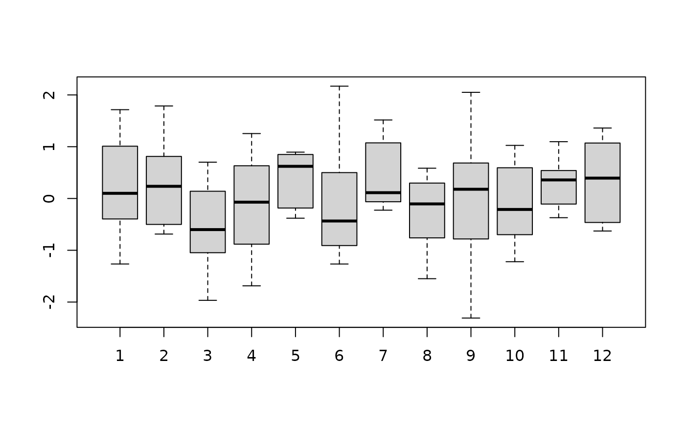
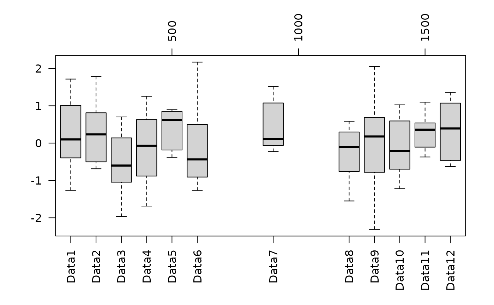
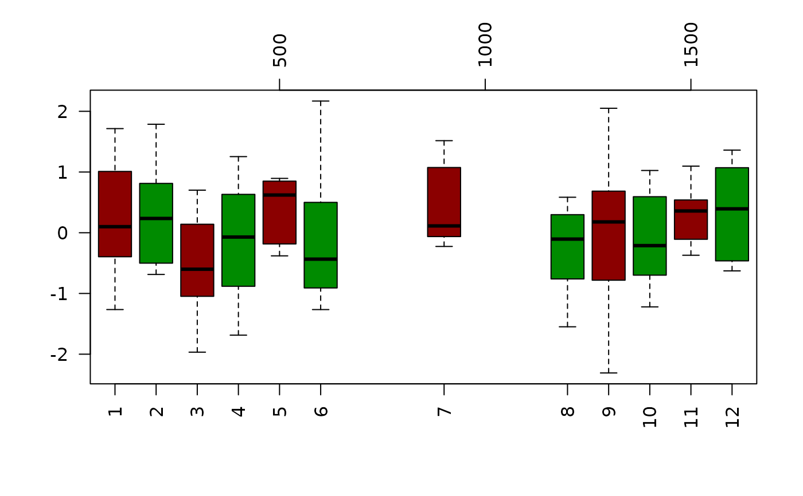

bplot.RdPlots boxplots of several groups of data and allows for placement at different horizontal or vertical positions or colors. It is also flexible in the input object, accepting either a list or matrix.
bplot(x, by, pos=NULL, at = pos, add = FALSE, boxwex =
0.8,xlim=NULL, ...)Vector, matrix, list or data frame. A vector may be divided according to the by argument. Matrices and data frames are separated by columns and lists by components.
If x is a vector, an optional vector (either character or numerical) specifying the categories to divide x into separate data sets. Boxplots are then made for each group.
The boxplots will be plotted vertically (horizontally) and pos gives the x (y) locations for their centers. If omitted the boxes are equally spaced at integer
values. This is the same as at in the boxplot function
Same as pos this is the name for this argument in the standard boxplot function.
If true, do not create a new plots just add the boxplots to a current plot. Note that the pos argument may be useful in this case and should be in the user coordinates of the parent plot.
A boxplot argument to control the width of the boxplot.
It behaves a little different than as an argumetn passed directly to boxplot.
To make this a general function it is useful to scale this according to size of positions. Within bplot this happens as boxwex<- boxwex* min(diff( sort( at))).
and then the scaled version of boxwex is now passed to boxplot.
Same as the usual argument used in plotting. The plotting limits for the x axis.
Other arguments to be passed to the boxplot function some handy favorites are:
names
Labels for each boxplot.
horizontalIf TRUE draw boxplots horizontally the default is false, produce
vertical box plots.
lwdWidth(s) of lines in box plots.
colColor(s) of bplots. See colors() for some choices.
This function was created as a complement to the usual S/R function for
boxplots. The current function makes it possible to put the boxplots
at unequal x or y positions in a rational way using the at or
pos arguments. This is useful for visually grouping a large set
of boxplots into several groups. Also placement of the boxplots with
respect to the axis can add information to the plot. Another aspect
is the emphasis on data structures for groups of data. One useful
feature is the by option to break up the x vector into distinct
groups.
Use axis(3) (axis(4)) to add an axis along the top (right side) or omit the category names and draw on the
bottom axis(1) (left side axis(2)).
The older bplot function drew the boxplots from scratch and if
one needs to do this refer to the old functions:
describe.bplot, draw.bplot.obj, bplot.xy, bplot.obj
Finally to bin data into groups based on a continuous variable and to
make bplots of each group see bplot.xy.
bplot.xy
#
set.seed(123)
temp<- matrix( rnorm(12*8), ncol=12)
pos<- c(1:6,9, 12:16)*100
bplot(temp)

#
par(las=2)
bplot( temp, pos=pos, names=paste( "Data",1:12, sep=""))
# add an axis along top for reference
axis(3)

#
# Xmas boxplots in pleasing red and green
bplot( temp, pos=pos, col=c("red4", "green4"))
# add an axis on top
axis( 3)
